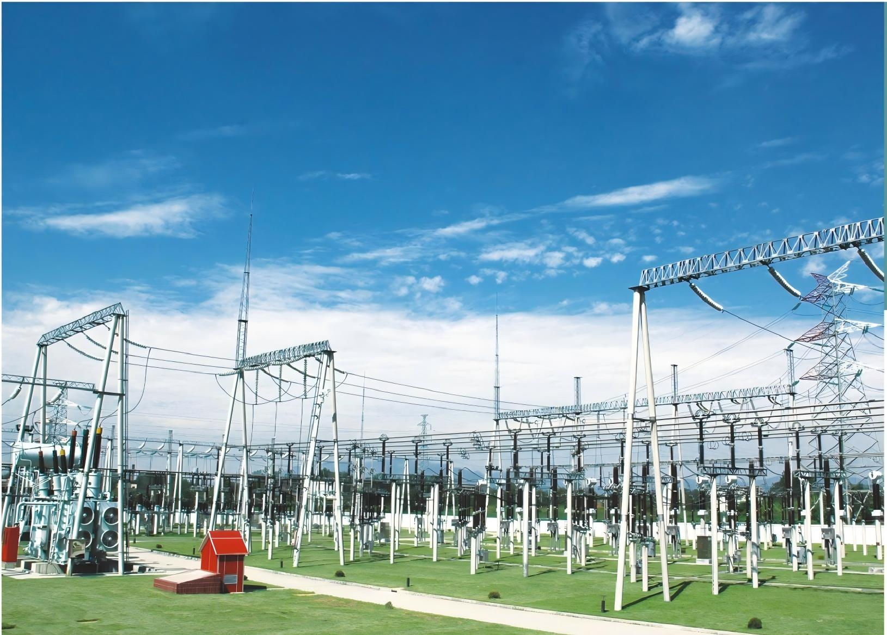
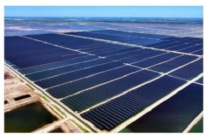
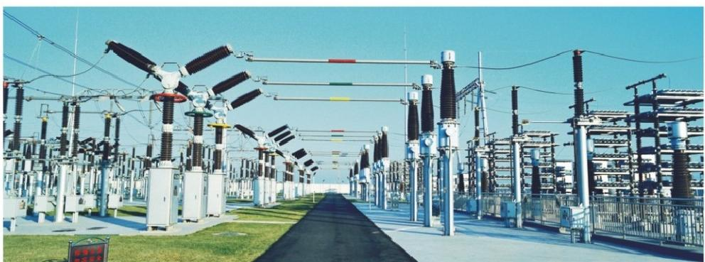

Annual Sales
TIANYU ELECTRICTo be confirmedFuzhou Tianyu Electric Co., Ltd.
Power & Distribution Transformer Solutions
Oil-immersed, dry-type, rectifier and special transformers for utility, industrial and renewable energy projects.




Company
Professional Manufacturer of Power Primary Equipment
Fuzhou Tianyu Electric Co., Ltd. focuses on power primary equipment for substations, distribution systems, transmission lines and project-based transformer solutions.
Explore CompanyEstablished In
TIANYU ELECTRIC1996Technical Personnel
TIANYU ELECTRICTo be confirmedEmployees
TIANYU ELECTRICTo be confirmed


Why Us
Service Culture for Engineering Projects
Transformer projects require service, documentation, accountability and long-term technical cooperation.
Read company cultureService First
Fast response, practical engineering review and clear document follow-up.
Reliable Engineering
Drawings, tests and parameters are handled with disciplined project logic.
Quality & Safety
Safety, quality, compliance and continuous improvement are built into the workflow.
Long-Term Partnership
Transparent communication and accountable support for utilities, EPCs and industrial clients.

Applications & Projects
Applications Backed by Engineering Experience
Utility Grid & Substations
Selection is confirmed according to load, voltage level and installation environment.
Renewable Energy
Selection is confirmed according to load, voltage level and installation environment.
Industrial Power
Selection is confirmed according to load, voltage level and installation environment.
Transportation & Infrastructure
Selection is confirmed according to load, voltage level and installation environment.
Commercial Buildings
Selection is confirmed according to load, voltage level and installation environment.
Energy-Saving Grid Upgrade
Selection is confirmed according to load, voltage level and installation environment.
Engineering Experience
China Three Gorges Corporation - Fujian Zhangpu Liu'ao 400,000 kW Offshore Wind Farm
Brochure-highlighted offshore wind application in southern Fujian.
- Location
- Fujian, China
- Scale
- 400,000 kW offshore wind farm
- Product Used
- To be confirmed
- Disclosure
- Public brochure reference
Company News
Transformer Website Launch Materials Checklist
To be confirmedFirst-version website content should be finalized with confirmed product images, drawings, certificates, factory data and project case assets.
Technical Article
How to Prepare a Transformer Inquiry
To be confirmedCapacity, voltage, frequency, installation environment, applicable standards and drawings help the engineering team review a transformer inquiry faster.
Knowledge
Oil-Immersed and Dry-Type Transformer Selection
To be confirmedTransformer type selection depends on project location, safety requirements, load profile, maintenance conditions and total lifecycle cost.